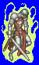
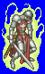
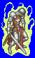
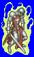

Height: 2 meters Weight: 175 lbs.
Habitat: Graveyard, crypt Origin: Scotland
Meaning: German for "one who exists"
A wight is an evil spirit that inhabits the corpse of a virtuous person. It continues to wear whatever garments and jewellery the corpse was wearing, but the process of possession half-mummifes the body. It is mentioned in J.R.R. Tolkien's "Lord of the Rings" as a creature that waits in foggy regions for travellers to happen by and attacks them.
See also: Ghoul, Zombie, Skeleton, Necromancer